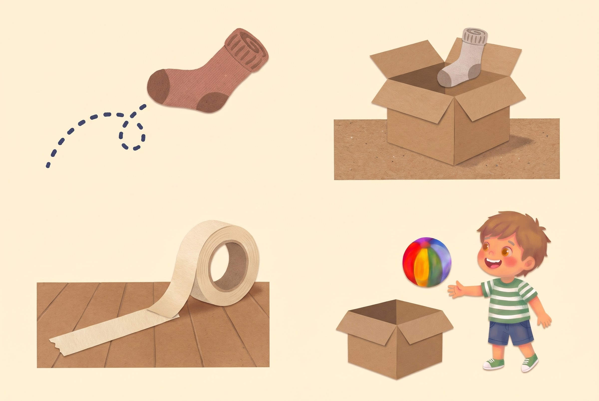
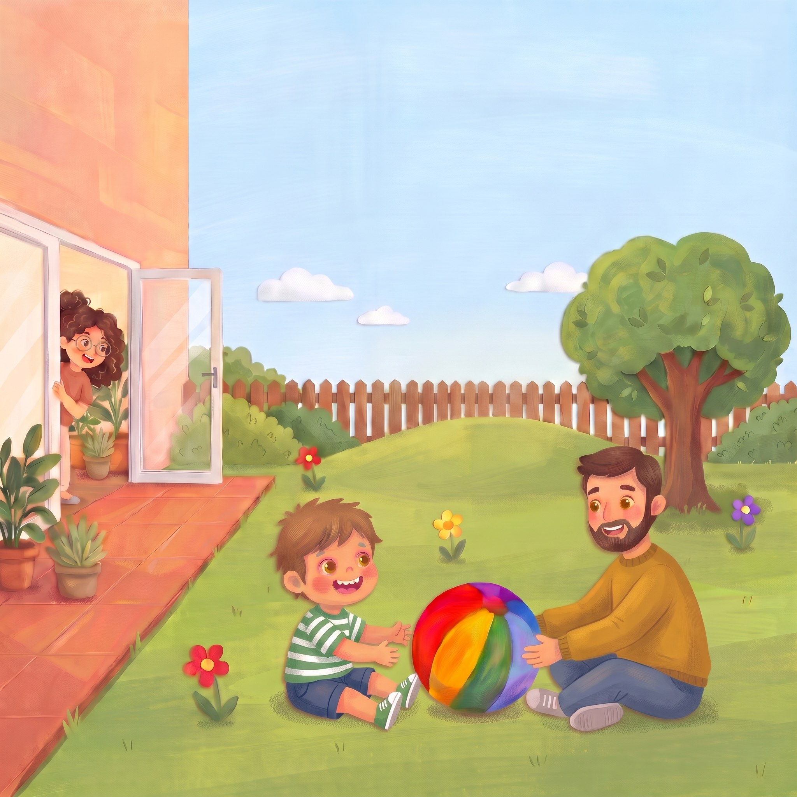

Necesitás: una media enrollada o una pelota blanda, una caja o una canasta, y cinta de papel o tiza.

| Cómo tiro | Yo creo que… | Lo que pasó: ¿a cuántos pasos cayó? |
|---|---|---|
| Suave | ||
| Medio | ||
| Fuerte | ||
| Al círculo, al cuadrado y al triángulo |
En el desafío, anotá en qué forma embocaste.

El concepto. Cuando algo se tira, sale con una velocidad hacia adelante y hacia arriba. Desde ese momento, la gravedad lo va frenando cuando sube y lo acelera cuando baja: por eso su camino es una curva (los físicos la llaman parábola), y no una línea recta que después cae. Con más fuerza, la curva es más larga. Rula es grande y liviana, y el aire la frena bastante: una pelota chica y pesada, tirada igual, llegaría más lejos.
Las formas. Reconocer círculos, cuadrados, triángulos y rectángulos en las cosas de todos los días es una de las primeras ideas de la geometría. Una pelota es una esfera: de frente se ve como un círculo.
El hito. Muchos chicos tiran una pelota con una mano, por encima del hombro y apuntando, entre los 3 y los 4 años, más o menos. Primero la sueltan o la empujan con las dos manos; la puntería llega con la práctica. Cada chico tiene su ritmo; ante cualquier duda, lo mejor es consultar al pediatra.
Seguridad. Mejor con pelotas blandas, al aire libre o en un lugar despejado, lejos de ventanas, vidrios y de la calle, y nunca apuntando a la cara de otra persona. Siempre con un adulto cerca.
Para charlar después de leer: ¿Qué cosas se pueden tirar? ¿Cuáles no se tiran nunca? ¿Qué forma tienen la mesa, un plato y la puerta de tu casa? Si tirás un bollo de papel, ¿qué camino hace en el aire?